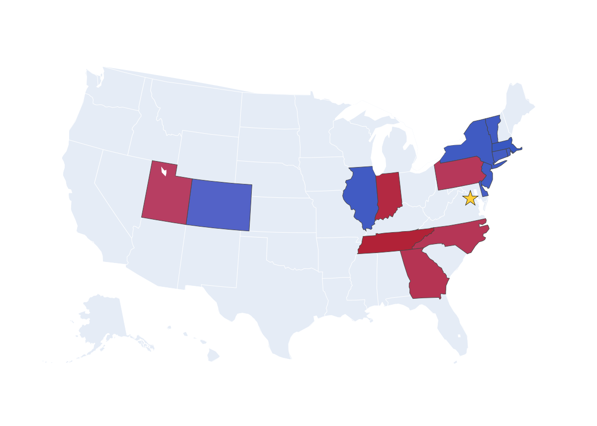

I’ve called Washington, D.C. my home since 2021. Like many cities, D.C. has a core of lifelong residents.
But it also has something other cities do not: a tie to the federal government.
That means D.C. is exceptionally transient.
In 2021, census data shows that between 51 and 64,000 people moved to Washington from other states,
in a city of under 700,000 — the most per capita of any state.
Following Donald Trump's second-term win in 2025, the energy of the city shifted. Everybody felt it. Everybody talked about how D.C.'s "vibe" had changed.
Partly, it was due to the physical ways Trump was changing the city. Construction for a new White House ballroom and reflecting pool rennovations -- leading to months of downtown construction and numerous high-profile mishaps.
A new, controversial curfew imposed on the certain majority-Black zones of the city.
But people also talked about something that struck me: more Republicans. A larger quantity. The people that already lived in Washington narrowed their eyes and examined passersby, wondering, was this a new transplant here to work in the Trump administration? The liberals wondered, would I run into some Heartland Republican on the metro?
I wanted to know: was there actually an influx of people from Republican states? Were we getting more migrants from Texas and Utah and Ohio, and fewer from Massachusetts and California? And, were there actually more Republicans?
I started by examing annual census data collected in the spring right after each election year. Some patterns, if subtle, do show up in the data to back this apparent "vibe shift" so many people are on about.
Following a Republican presidential win, more red states send folks to D.C. Following a Democrat, the opposite happens.
Here are maps showing 15 states with the most people moving to D.C. per capita in 2017 and in 2021, following Trump's win, and then Biden.
I'm mapping it this way -- per capita -- to show states with smaller populations that have a relatively large number of people moving to D.C.,
even if their absolute numbers of migrants are dwarfed by larger states like California. I also excluded Virginia and Maryland, because they're considered a broader part of the "DMV" area and for the purposes of this analysis, I'm interested in what in-migration patterns we see beyond the greater D.C. area.

States with the most people per capita moving to D.C. between the 2016 and 2017 censuses (top 15). Red states voted for Trump; blue for Hillary.
States with the most people per capita moving to D.C. between the 2020 and 2021 censuses (top 15). Blue states voted for Biden; red for Trump.
Another way to look at this question
-- which states see the most people flock to D.C. following each election year --
is to look which states see the biggest change in the number of people moving to D.C. in the post-election years versus the average annual number.
We can see the same pattern: more folks from red states and middle America move to D.C. after Trump's 2016 win,
and more people from blue and coastal states come to the city after Biden's 2020 win.
But despite some visible trends, their subtleness suggests there are other factors at play, too.
To see whether the influx from redder states meant more Republicans in town, let's look at voter registration.
An analysis of D.C. voter registration shows us hardly any change in voter registeration after election years. Across the board, Republican voters hover just above 5 percent.
The voter roll may not be a perfect reflection of the distribution of Democrats versus Republican mix in town.
For one, many voters may choose to continue voting in the state they came from, rather than re-register in D.C.
Annecdotally, I know many people who did so, arguing their vote "counted for more" elsewhere. D.C. is reliably Democratic, making an individual's vote unlikely to make the differece in any particular race.
Plus, D.C. residents can't elect voting members of Congress, another reason voters may wish to vote elsewhere, instead, even if it is bending residency laws.
Also, this whole analysis disregards those living in Maryland and Virginia.
Still, these voter records tell us the Presidential election is not significantly impacting the mix of Democrats and Republicans in the city.
That means that at least a portion of the "vibe shift" in D.C. comes from other changes, unrelated to Democrats and Republicans in town.
It's likely that there isn't as large of an influx of Republicans or Democrats following an election as people perceive.
Many people working in D.C. are there to fight against the policies of a new administration -- not for.
People move to D.C. to work for advocacy organizations, lobbying firms, fundraising outfits.
Plus, each election marks new, visible markers of the new Commander In Chief policies.
Trump offers an unusually clear example.
Groups of uniformed National Guardsman are a newly common sight in the city. Photo Source: AP. Illustration by Abigail Mihaly.
Beginning with an August, 2025 executive order to “restor[e] law and order” in the District, Trump deployed the District of Columbia's National Guard. Over the last nearly a year, Trump has deployed thousands more troops from other states. They stand in metro stations and in groups on street corners. They stand; they watch.
In August of last year, over 1,900 Guardsman from the D.C. National Guard, West Virginia, South Carolina, Ohio, Mississippi, Louisiana and Tennessee were deployed in the District.
That number has continued to increase. Around July 4, 2026 — and the large-scale celebrations for the nation’s 250th birthday — Trump brought that total to over 5,000. There are currently 5,094 troops in the city, hailing from 24 Republican states.
In other words, there's more than one guardsman per 150 D.C. residents.
Some folks from middle America do seem to come to D.C. following an election year. But its not fully consistent. For example, here are the top anomolous states from the year after Obama's first win, 2009:
The majority of these states voted for Obama. But some red states make the list, too.
This suggests that more than anything, Washingtonians are responding to, simply, the vibe.
This makes sense: policies always impact this city. And, in 2026, specifically, though we don't yet have this year's census numbers, its worth noting that Trump is an exceedingly message-focused President, interested in visual messages like, for example, adding his name to the beloved national arts center, the Kennedy Center. And, in an exceedingly liberal city, its hard to ignoe the visible outrage to his policies.
After inaguration day, lampposts, electric boxes and building walls were quickly covered in political posters. Photos by Abigail Mihaly.